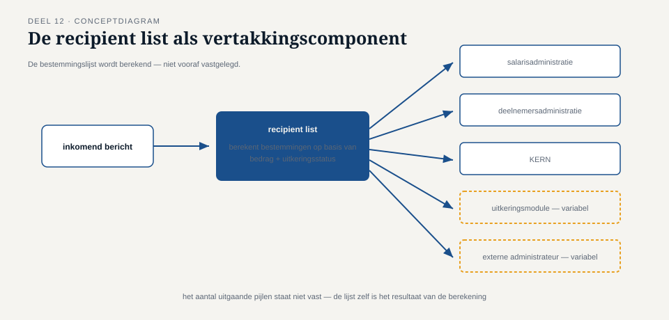
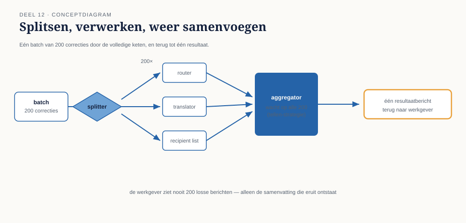

Deel 12 — Routing-patroonfamilie diepgaand: dynamic router, recipient list, splitter/aggregator
Reader · Ductus-cursus Enterprise Integration Patterns · niveau 2 (professional) · deel 12 van 22
12.0 Een salariscorrectie die naar zes bestemmingen tegelijk moest
Met de broker-architectuur uit deel 11 op zijn plaats kreeg Caspar een routeringsvraag die de content-based router uit deel 4 niet kon beantwoorden. Een salariscorrectie boven een bepaalde drempel moest, bleek uit een nieuwe compliance-eis voor de Wtp-voorbereiding, niet alleen naar KERN voor verwerking, maar gelijktijdig naar: het interne controleteam, een externe accountant (alleen voor correcties boven €10.000), de risicomanagementafdeling, en — uitsluitend als de deelnemer een lopende uitkering had — ook naar de uitkeringsadministratie.
Dit is geen content-based router-probleem: de bestemmingen zijn niet één van meerdere vaste opties (zoals in deel 4: adreswijziging óf dienstverbandmutatie óf salariscorrectie), maar een variabele combinatie van meerdere, soms afhankelijk van meerdere criteria tegelijk. En het is ook geen publish-subscribe-vraagstuk uit deel 6, want niet elke geïnteresseerde partij is voor elk bericht evenzeer relevant — de externe accountant is bijvoorbeeld alleen relevant bóven €10.000, iets wat een gewoon abonnement niet kan uitdrukken.

Dit deel behandelt drie patronen die dit soort samengestelde en dynamische routeringsvragen oplossen: de dynamic router, de recipient list, en het paar splitter/aggregator.
12.1 De dynamic router
De content-based router uit deel 4 werkt met een vaste set regels: mutatietype X gaat naar kanaal Y, ingebouwd en te wijzigen alleen door de router zelf aan te passen. Een dynamic router verschilt hierin fundameneel: de routeringsregels worden niet in de router zelf vastgelegd, maar op een andere plek beheerd — bijvoorbeeld in een configuratietabel, een extern regelbestand, of een raadpleegbare service — en de router leest die regels bij elke beslissing opnieuw uit.
Het voordeel is niet snelheid of elegantie, maar wijzigbaarheid zonder hercompilatie of herimplementatie van de router zelf. Bij Meridiaan bleek dit relevant zodra de compliance-eis (welke drempel, welke bestemmingen) meermaals wijzigde tijdens de eerste maanden van de Wtp-voorbereiding — elke wijziging in de router zelf zou een releasecyclus hebben gevergd, terwijl een wijziging in de configuratietabel binnen een uur kon worden doorgevoerd door het compliance-team zelf, zonder ontwikkelaarsinzet.
Dit voordeel heeft een prijs die niet onderschat mag worden: een dynamic router is per definitie minder voorspelbaar op basis van de code alleen. Waar een content-based router zijn volledige gedrag toont in zijn eigen broncode, moet een dynamic router altijd samen met zijn actuele configuratie worden gelezen om te begrijpen wat hij op een gegeven moment doet. Dit vraagt aanvullende discipline: versiebeheer op de configuratie zelf, en — cruciaal, gezien deel 9 — dezelfde zichtbaarheidseisen als voor foutafhandeling: als een dynamic router een bericht routeert op basis van regels die niemand meer kan reconstrueren zoals ze een maand geleden waren, is een audit achteraf onmogelijk.
Kernzin 11 van de cursus: wijzigbaarheid zonder codewijziging is waardevol precies wanneer de regels vaker veranderen dan de code eromheen — en wordt een risico zodra niemand meer bijhoudt wat de regels op enig moment waren.
12.2 De recipient list
Waar een content-based router (statisch of dynamisch) een bericht naar één bestemming uit meerdere mogelijke opties stuurt, stuurt een recipient list een bericht naar een berekende verzameling van bestemmingen tegelijk — precies het probleem van de salariscorrectie in 12.0.
De kern van een recipient list is een functie die, gegeven de inhoud van het bericht, de lijst van bestemmingen berekent. Voor de casus van 12.0 zou die functie er, informeel, zo uitzien:
- Altijd: KERN, interne controleteam, risicomanagementafdeling
- Als bedrag > €10.000: voeg toe: externe accountant
- Als deelnemer een lopende uitkering heeft: voeg toe: uitkeringsadministratie
Een recipient list moet, om houdbaar te blijven, aan een vergelijkbare eis voldoen als de content-based router uit deel 4: de berekening van de bestemmingslijst hoort declaratief en transparant te zijn, niet verstopt in een lange keten van imperatieve code. Bij Meridiaan is dit opgelost door de recipient list-logica in dezelfde configuratietabel als de dynamic router uit 12.1 onder te brengen, met dit verschil: waar de dynamic router één bestemming teruggeeft, geeft deze berekening een lijst terug.
Een essentieel verschil met eenvoudige publish-subscribe (deel 6): bij publish-subscribe bepaalt elke abonnee zelf, onafhankelijk, of hij een bericht relevant vindt — de zender weet niet eens hoeveel abonnees er zijn. Bij een recipient list bepaalt de zendende kant (of een component vlak na de zender) welke ontvangers relevant zijn, gebaseerd op de inhoud van dit specifieke bericht. Dit is een bewuste, expliciete beslissing per bericht, niet een impliciet abonnement. De keuze tussen beide hangt af van waar de kennis hoort te zitten: als de regel "wie is geïnteresseerd" logisch bij de boodschap zelf hoort (zoals hier: een compliance-eis die bepaalt wie een salariscorrectie moet zien), is een recipient list passender; als de regel logisch bij de ontvanger hoort ("ik wil alle mutatie-gebeurtenissen zien, ongeacht type"), is publish-subscribe passender.

12.3 Splitter en aggregator: het omgekeerde probleem, en de terugkeer
Niet elk routeringsvraagstuk gaat over "één bericht naar meerdere bestemmingen sturen". Soms is het omgekeerde nodig: één bericht bevat meerdere, zelfstandig te verwerken onderdelen, die elk apart door de keten moeten, waarna de resultaten weer moeten worden samengevoegd tot één antwoord.
Bij Meridiaan deed dit zich voor bij de jaarlijkse batchcorrectie: een werkgever levert één bestand aan met tweehonderd individuele salariscorrecties voor tweehonderd verschillende deelnemers. Deze moeten stuk voor stuk door dezelfde validatie- en verwerkingsketen als een individuele correctie (inclusief de recipient list uit 12.2, want ook een individuele correctie uit deze batch kan boven €10.000 uitkomen), maar de werkgever wil uiteindelijk één samengevat resultaat: hoeveel zijn er geslaagd, hoeveel gefaald, en waarom.
Een splitter breekt het ene binnenkomende bericht op in n afzonderlijke berichten — in dit geval tweehonderd individuele salariscorrectieberichten, elk met een eigen bericht-ID (deel 3, cruciaal voor idempotentie) en een gedeeld correlatiekenmerk dat aangeeft tot welke oorspronkelijke batch ze behoren. Elk van de tweehonderd doorloopt vervolgens zelfstandig de bestaande keten — dezelfde router, dezelfde translator, dezelfde recipient list als een individuele correctie, zonder dat die componenten ook maar hoeven te weten dat dit bericht uit een batch komt.
Een aggregator doet het omgekeerde: hij verzamelt de resultaten van alle berichten met hetzelfde batchcorrelatiekenmerk, en combineert ze tot één samengevat resultaat zodra — en dit is de lastigste ontwerpvraag van het patroon — bekend is wanneer de verzameling compleet is. Drie strategieën zijn gangbaar:
Tellen. De splitter geeft bij het opsplitsen ook het totale aantal onderdelen mee (in dit geval: 200); de aggregator weet dan precies wanneer hij compleet is.
Time-out. De aggregator wacht een vooraf bepaalde tijd en meldt daarna het resultaat als (mogelijk) onvolledig — nuttig wanneer het totale aantal onderdelen vooraf niet bekend is, maar met het risico dat een langzame deelverwerking ten onrechte als "gefaald" wordt gerapporteerd.
Een expliciet afsluitbericht. Een apart, laatste bericht in de reeks markeert het einde van de batch — vergelijkbaar met tellen, maar bruikbaar wanneer het totale aantal pas tijdens verwerking bekend wordt.
Bij Meridiaan is voor tellen gekozen, omdat het totale aantal deelnemers in een batchbestand al bij binnenkomst bekend is — de meest robuuste van de drie strategieën, wanneer beschikbaar.
Kernzin 12 van de cursus: een splitter zonder een bijbehorend, expliciet ontworpen aggregatiemechanisme is een gebroken belofte — de afzonderlijke delen bestaan, maar niemand weet ooit zeker of het geheel compleet is teruggekomen.

12.4 Hoe de drie patronen zich tot elkaar verhouden
De drie patronen van dit deel lossen, net als in deel 5 (translator/envelope wrapper/normalizer), aantoonbaar verschillende problemen op:
| Patroon | Probleem | Richting |
|---|---|---|
| Dynamic router | Eén bestemming, regels wijzigen vaker dan code | Eén-op-één, wijzigbaar |
| Recipient list | Meerdere, berekende bestemmingen tegelijk | Eén-op-veel, door de zendende kant bepaald |
| Splitter/aggregator | Eén bericht met meerdere zelfstandige onderdelen | Eén-naar-veel-en-weer-terug |
Ze zijn bovendien combineerbaar: bij Meridiaan doorloopt elk van de tweehonderd door de splitter geproduceerde berichten óók de recipient list uit 12.2, wat betekent dat één batchbericht in potentie kan uitmonden in honderden individuele afleveringen, verspreid over meerdere bestemmingen, voordat de aggregator alles weer samenbrengt tot één antwoord aan de werkgever.
Samenvatting van deel 12
- Een dynamic router leest zijn routeringsregels uit een extern beheerde bron in plaats van vast in de code, met als voordeel snelle wijzigbaarheid en als prijs de noodzaak van versiebeheer en auditeerbaarheid van die regels.
- Een recipient list stuurt een bericht naar een berekende verzameling bestemmingen, bepaald door de zendende kant op basis van de inhoud — anders dan publish-subscribe, waar elke ontvanger zelf beslist.
- Een splitter breekt één bericht op in zelfstandige onderdelen die elk de volledige keten doorlopen; een aggregator voegt de resultaten weer samen, met tellen, time-out, of een expliciet afsluitbericht als strategieën om te weten wanneer de verzameling compleet is.
- Een splitter zonder bijbehorende aggregatiestrategie laat onbeantwoord of het geheel ooit compleet terugkomt.
Vooruitblik
Deel 13 verdiept de transformatie-patroonfamilie van niveau 1 op vergelijkbare wijze: de content enricher, content filter en claim check — nodig zodra transformatie niet langer alleen formaten omzet, maar ontbrekende gegevens moet aanvullen of grote payloads efficiënt door de keten moet leiden.